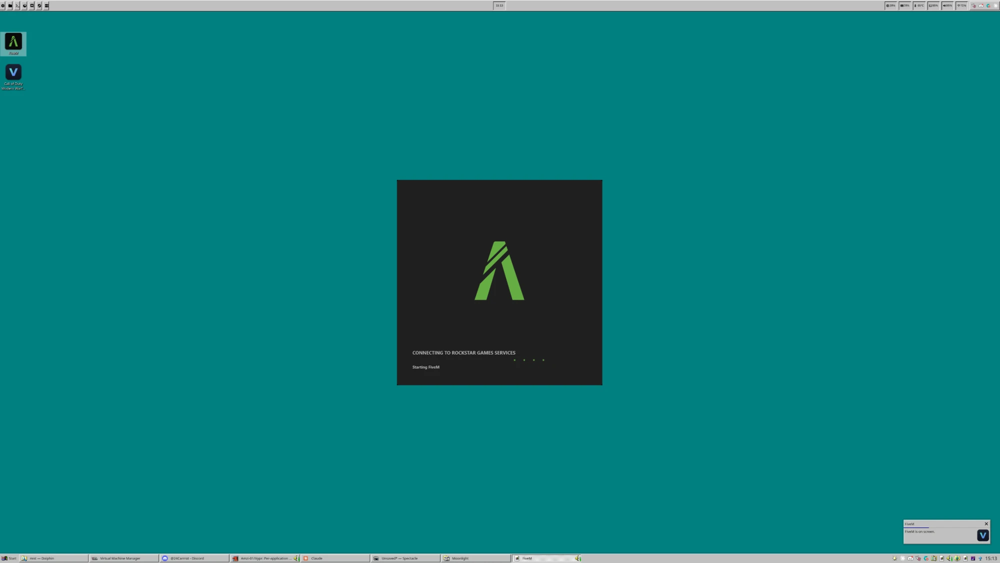
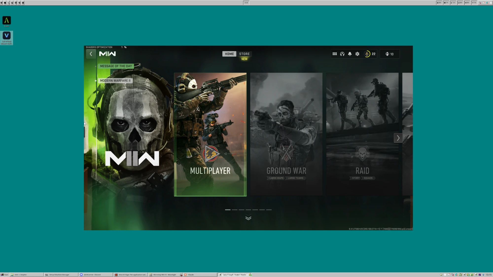

An application running inside a Windows VM appears on your Linux desktop as an ordinary window — its own taskbar entry, its own place in the stacking order. No RDP, and no video codec anywhere in the path. The picture goes from the guest's memory to your screen uncompressed.


WinApps and WinBoat solve the same shape of problem, and both do it over RDP RemoteApp. That one choice is what most of the difference comes down to.
RDP's video path was designed for documents. It is fine for a text editor and it falls apart on anything that moves, because every frame is encoded on one side and decoded on the other before you see it. Vypr writes frames into a region of memory the host and guest both hold, and the host draws them. There is no encoder to wait for and nothing to lose.
.psd in Photoshop, an installer, a document. Saving writes back to the file you opened, not to a copy stranded in the VM.Arranged as the README has it: everything all three do sits at the top, and the rows where they part company are at the foot. Compared against WinApps and WinBoat documentation as of August 2026.
| WinApps | WinBoat | Vypr | |
|---|---|---|---|
| Windows apps as native Linux windows | yes | yes | yes |
| How the picture travels | RDP codec | RDP codec | shared memory, uncompressed |
| Frame latency | encode + decode | encode + decode | no codec in the path |
| Audio | yes | yes | yespinned to the app’s own device |
| Microphone into the guest | yes | yes | yesno extra software |
| Clipboard sharing | yes | yes | yestext only |
| A folder from Linux, inside Windows | yes | yes | yesvirtiofs, opt-in, appears as a drive |
| Finds your apps for you | yes | yes | yesdesktop shortcuts, vypr detect |
| Fullscreen, minimise and window buttons | yes | yes | yes |
| Seeing the guest’s whole screen when something is wrong | yes | yes | yesvypr --debug desktop |
| Setup effort | guided | guided | two installers, plus passthrough |
| GPU acceleration inside the guest | no | noplanned | yespassed-through GPU |
| Demanding games | no | no | yes4K at 60 fps, measured |
| Games that read raw mouse input | no | no | yeskernel-level HID injection |
| Controllers | no | no | yesas real XInput devices |
Opening a Linux file in a Windows app.psd, .exe, anything | no | no | yesdouble-click it, and saves come back |
| Dragging a file onto a running Windows app | no | no | yescopied in and dropped where you point |
| Windows notifications on the Linux desktop | no | no | yesraised as ordinary desktop notifications |
Where it loses, it loses on reach. It needs a second GPU, which most machines do not have and which cannot be worked around. There is no graphical manager. If you want Office or Photoshop occasionally on an ordinary laptop, WinApps or WinBoat will cost you far less effort and serve you better. Vypr is for the case they cannot reach — when the thing you are running has to be fast, and you have a second GPU to give it.
Every one of these is checked for and explained by vypr doctor rather
than left to fail quietly.
vypr open-elevation turns the prompt off inside the VM, which is what makes installers work.A second GPU, passed through to a Windows VM under libvirt, with IOMMU on. This is the hard requirement and the reason Vypr is not for everyone. It cannot be worked around — the guest renders on real hardware, and that hardware has to be given to it.
Beyond that: a Linux desktop with SDL3, CMake, Ninja and a C++ compiler, and Windows 10 1903 or newer in the guest. Both installers check for all of it and say plainly what is missing rather than failing halfway through.
./install/install.shIt builds and installs the binaries, configures your VM, generates a key for the guest, and prints the two commands that need root rather than asking for your password. It only changes the VM where something is actually missing, and saves the original settings first.
Run vypr-setup.exe from the
latest release inside
the VM. One file, nothing to unpack: it carries the agent, installs the two drivers
Vypr needs, and authorises the key the Linux installer printed.
vypr detectThat reads the guest's desktop — shortcuts and Steam entries alike — lists what it found, and adds the ones you pick, pulling each app's real icon out of the guest executable so it lands in your application menu like anything else.
.psd, .exe and friends do thatClose the last window and the VM shuts itself down a minute later. Launching something during that minute cancels it.
FiveM does not run under Wine, and the usual answers were all unsatisfying. A whole-desktop stream means alt-tabbing inside someone else's desktop. RDP hands over individual windows properly, but its video path was built for documents and falls apart on anything that moves. Running the game on a second machine means owning a second machine.
What was actually wanted was narrower than any of those: one window, from the VM, behaving like a native one. Vypr is that, and it turned out to work for everything else in the VM too.